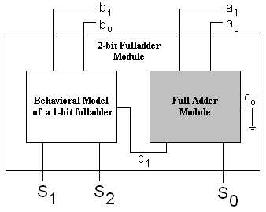

Previous: Example Module 2, Up: Modules
In this section, we will build a module which consists of one other module and other behavioral constructs. This will serve as an example which illustrates building modules which are a mixture of behavioral constructs and other smaller modules. To keep it simple but illustrative, we will build a 2-bit full adder module which consists of two 1-bit full adder components. One of the components is the off-the-shelf 1-bit full adder module provided in libLCS. The other component is a 1-bit full adder built using behavioral constructs. The block diagram for such a scheme is as follows.

InOutBus
In the above block diagram, a0 and a1 are inputs to the off-the-shelf full adder component of
our 2-bit full adder, and b0 and b1 are inputs to the 1-bit full adder component built using behavioral
constructs. Also, the behavioral component takes the carry output c1 of the off-the-shelf full adder module as
carry input. Hence (refer to Example Module 1 and Example Module 2), our 2-bit full adder module will need
to respond to events occuring on the busses b0, b1 and c1. Since b0 and b1 are
inputs to the 2-bit full adder, in building our module, we can declare them to be of type InputBus (this is
similar to how we used busses of type InputBus as inputs to the 1-bit bit full adder module in building
Example Module 2.) However, input Busses are read only busses. Because of this constraint, we cannot have bus c1
to be of type InputBus. Bus c1 should be writable by the off-the-shelf full adder module, while having
the capacity to notify the 2-bit full adder module about events occuring on its lines. To facilitate such cases in
general, libLCS provides a different type of bus called the InOutBus. Hence, we will declare the bus c1
to be of type InOutBus in our 2-bit full adder implementation. The declaration of the InOutBus class,
and the include file pertaining to it, are presented in the discussion building up to the presentation of
Example Module 2 in the previous section.
Below is the complete listing of the 2-bit full adder module definitaion and its implementation. Notice the declaration
of the bus c1 to be of type InOutBus. Apart from this new construct which we have learnt in this section,
the other constructs and concepts used were learnt in Example Module 1 and Example Module 2. See the comments
inlined in the listing for more information.
#include <lcs/lcs.h>
using namespace lcs;
// Since the module is going to have few behavioral constructs, we should derive
// it from the base class lcs::Module.
class TwoBitFullAdder : public Module
{
public:
// The constructor takes arguments which establish the external connections.
TwoBitFullAdder(const Bus<3> &sum, const InputBus<2> &A, const InputBus<2> &B);
~TwoBitFullAdder();
// This is a virtual function which has to be overidden. It is declared in the
// base class Module. This is the function which should incorporate the behavioral
// 1-bit fulladder component.
virtual void onStateChange(int portId);
private:
InOutBus<1> c1; // The carry output of the off-the-shelf full adder component.
// It is declared as an InOutBus.
InputBus<2> a, b; // The 2-line inputs to our 2-bit fulladder.
Bus<3> s; // The 3-line sum output of our full adder.
FullAdder *fa; // The off-the-shelf fulladder module which will be created in
// the constructor.
};
TwoBitFullAdder::TwoBitFullAdder(const Bus<3> &sum, const InputBus<2> &A, const InputBus<2> &B)
: Module(), c1(0), a(A), b(B), s(sum)
{
Bus<> cin(0); // The carry input to the fulladder module.
fa = new FullAdder(s[0], c1, a[0], b[0], cin); // Initialising the fulladder module.
// The 2-bit fulladder module has to respond to state changes in the relevant
// input bits and the carry output of the off-the-shelf fulladder module. Hence
// the module has to request for notification of line events from these signals.
// Note here that the carry input c1 for the behavioral component is declared to
// be of type InOutBus. If it were to be declared as a normal Bus object,
// then it will not be able to notify about the events on its lines. If it were
// to be declared as an InputBus, then the off-the-shelf full adder module will
// not be able to write on to it.
c1.notify(this, LINE_STATE_CHANGE, 1);
a.notify(this, LINE_STATE_CHANGE, 2, 1);
b.notify(this, LINE_STATE_CHANGE, 3, 1);
}
TwoBitFullAdder::~TwoBitFullAdder()
{
delete fa;
c1.stopNotification(this, LINE_STATE_CHANGE, 1);
a.stopNotification(this, LINE_STATE_CHANGE, 2, 1);
b.stopNotification(this, LINE_STATE_CHANGE, 3, 1);
}
void TwoBitFullAdder::onStateChange(int portId)
{
// When a state change occurs on of the lines c1[0] or a[1] or b[1],
// The behavioral model should compute the bit values for the second
// and third sum output bits and write them onto the output bus.
// This is done as follows.
s[1] = (~a[1] & ~b[1] & c1[0]) | (~a[1] & b[1] & ~c1[0]) |
(a[1] & ~b[1] & ~c1[0]) | (a[1] & b[1] & c1[0]);;
s[2] = (~a[1] & b[1] & c1[0]) | (a[1] & ~b[1] & c1[0]) |
(a[1] & b[1] & ~c1[0]) | (a[1] & b[1] & c1[0]);
}
Below is a simple program which illustrates the use of the above 2-bit full adder module.
using namespace lcs;
int main(void)
{
Bus<2> a, b; // Inputs
Bus<3> sum; // Sum output
// Initialising a 2-bit fulladder module.
TwoBitFullAdder adder(sum, a, b);
// A tester to generate inputs for the 2-bit fulladder module.
Tester<4> tester((a, b));
ChangeMonitor<2> amon(a, "A");
ChangeMonitor<2> bmon(b, "B");
ChangeMonitor<3> smon(sum, "SUM");
Simulation::setStopTime(2000);
Simulation::start();
return 0;
}
When the above program is compiled and run, the following is the output obtained.
At time: 0, A: 00
At time: 0, B: 00
At time: 0, SUM: 000
At time: 200, A: 01
At time: 200, SUM: 001
At time: 300, A: 10
At time: 300, SUM: 010
At time: 400, A: 11
At time: 400, SUM: 011
At time: 500, A: 00
At time: 500, B: 01
At time: 500, SUM: 001
At time: 600, A: 01
At time: 600, SUM: 010
At time: 700, A: 10
At time: 700, SUM: 011
At time: 800, A: 11
At time: 800, SUM: 100
At time: 900, A: 00
At time: 900, B: 10
At time: 900, SUM: 010
At time: 1000, A: 01
At time: 1000, SUM: 011
At time: 1100, A: 10
At time: 1100, SUM: 100
At time: 1200, A: 11
At time: 1200, SUM: 101
At time: 1300, A: 00
At time: 1300, B: 11
At time: 1300, SUM: 011
At time: 1400, A: 01
At time: 1400, SUM: 100
At time: 1500, A: 10
At time: 1500, SUM: 101
At time: 1600, A: 11
At time: 1600, SUM: 110